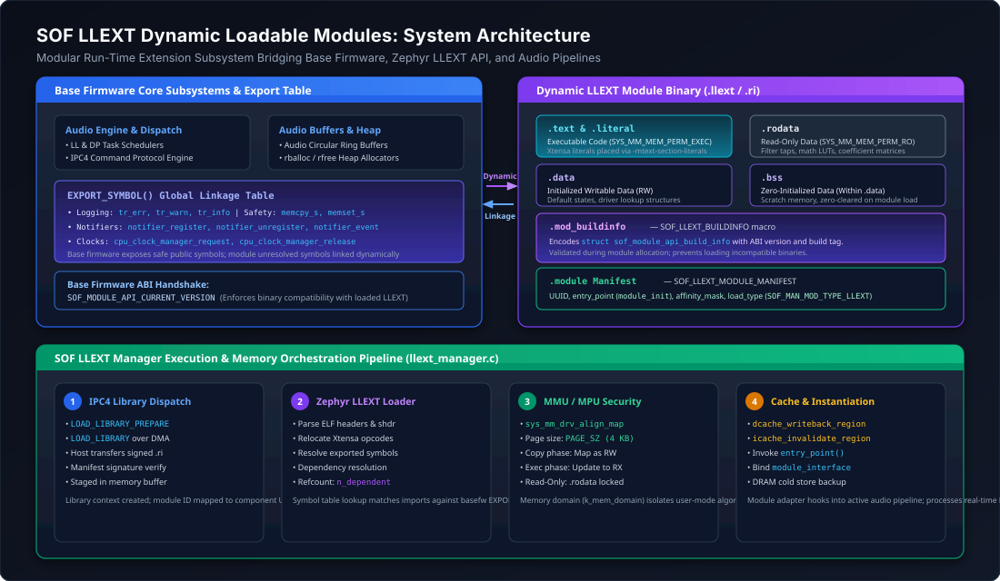
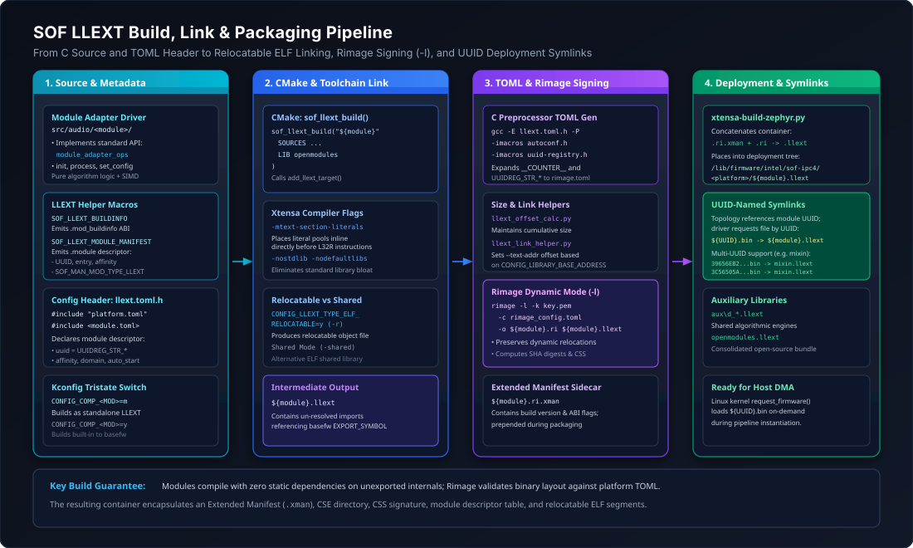
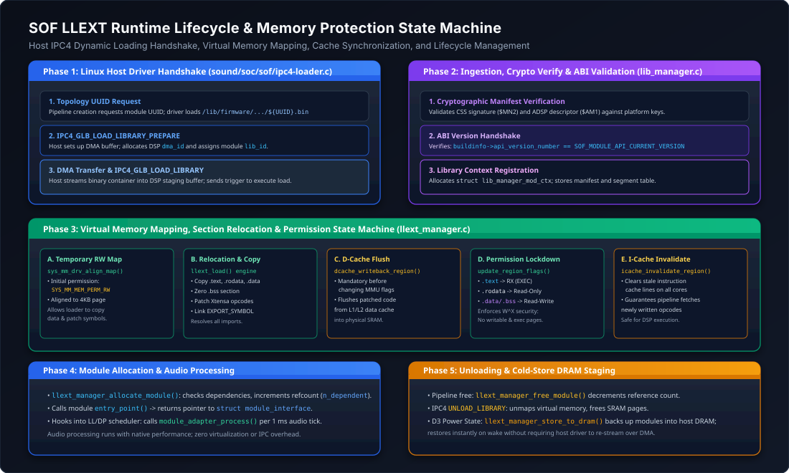

LLEXT Dynamic Loadable Modules Architecture#
Sound Open Firmware (SOF) incorporates dynamic runtime loading of audio processing components using the Zephyr Linkable Loadable Extensions (LLEXT) subsystem. Rather than compiling every audio filter, codec, algorithm, and vendor processing library into a single monolithic firmware executable, LLEXT enables components to be built as standalone, relocatable Executable and Linkable Format (ELF) objects (.llext files).
These modular objects are signed using Rimage in dynamic library mode (rimage -l), staged on the host filesystem under /lib/firmware/intel/sof-ipc4/, and loaded dynamically into audio DSP memory on demand by the Linux kernel driver (snd-sof) via the Intel IPC4 protocol when audio pipelines are created.
{kind=link}

Figure 215 System-level architecture showing relationships between Base Firmware, Zephyr LLEXT API, SOF LLEXT Manager, relocatable modules, and memory protection boundaries.#
Architectural Motivation & Design Goals#
The transition from monolithic firmware builds to dynamically loadable LLEXT modules addresses several critical architectural challenges in modern audio DSP platforms:
SRAM Footprint Optimization: Embedded DSP High-Performance SRAM (HP-SRAM) is constrained (often 2 MB to 4 MB). A monolithic image containing dozens of audio processing algorithms (reverberation, beamforming, active noise reduction, multi-band dynamic range compression, keyword spotting, neural network models) quickly exhausts available SRAM. LLEXT allows the DSP to keep only the base operating system and currently active stream modules in memory, freeing SRAM when pipelines are stopped.
Post-Silicon Extensibility & Rapid Delivery: New audio processing algorithms or bug fixes can be packaged, cryptographically signed, and distributed to end-user systems as standalone module files without updating or rebooting the base firmware.
Vendor IP & Proprietary Algorithm Isolation: Third-party acoustic processing algorithms (e.g., proprietary speaker protection, spatial audio synthesizers, licensed decoders) can be compiled against the SOF Module Adapter API and distributed as pre-compiled, relocatable binaries without exposing vendor source code or linking against the full GPL/BSD base firmware source tree.
Fine-Grained Memory Protection: Dynamic modules run within dedicated Zephyr memory domains (
struct k_mem_domain) with hardware MPU/MMU enforcement (\(W \oplus X\) security policy), isolating algorithmic processing from critical RTOS data structures and interrupt handlers.
Module Binary Anatomy & Section Descriptors#
An LLEXT module is an ELF32 relocatable object file (or shared library) containing standard code/data sections along with specialized SOF metadata sections required for runtime ABI validation and manifest registration.
Section Name |
Section Type |
Memory Permissions |
Description & Contents |
|---|---|---|---|
|
|
|
Executable machine instructions. On Xtensa, literal pools are colocated via |
|
|
Read-Only (RO) |
Constant data, coefficient tables, filter tap matrices, and math lookup tables. |
|
|
Read-Write (RW) |
Initialized global and static variables. |
|
|
Read-Write (RW) |
Zero-initialized variables. Enforced to reside contiguously within or adjacent to |
|
|
Read-Only (RO) |
Contains |
|
|
Read-Only (RO) |
Contains |
LLEXT Integration Macros#
SOF provides standardized macros in include/module/module/llext.h to simplify module authoring:
ABI Compatibility Check (SOF_LLEXT_BUILDINFO)#
#define SOF_LLEXT_BUILDINFO \
static const struct sof_module_api_build_info buildinfo \
__section(".mod_buildinfo") __used = { \
.format = SOF_MODULE_API_BUILD_INFO_FORMAT, \
.api_version_number.full = SOF_MODULE_API_CURRENT_VERSION, \
}
When the module is loaded, llext_manager_allocate_module() inspects the .mod_buildinfo section. If buildinfo->api_version_number.full does not match SOF_MODULE_API_CURRENT_VERSION in the running base firmware, the load request is rejected with -EINVAL, preventing runtime panics caused by ABI drift.
Module Manifest Registration (SOF_LLEXT_MODULE_MANIFEST)#
#define SOF_LLEXT_MODULE_MANIFEST(manifest_name, entry, affinity, mod_uuid, instances, ...) \
{ \
.module = { \
.name = manifest_name, \
.uuid = mod_uuid, \
.entry_point = (uint32_t)(entry), \
.instance_max_count = instances, \
.type = { \
.load_type = SOF_MAN_MOD_TYPE_LLEXT, \
.domain_ll = 1, \
}, \
.affinity_mask = (affinity), \
} \
}
This macro registers:
UUID: The 128-bit RFC 4122 component identifier matched against ALSA Topology widget UUIDs.
Entry Point: Function pointer (e.g.
module_init) called upon instantiation, returning the driver’sstruct module_interface *.Affinity Mask: Bitmask of DSP cores permitted to run the module (e.g.
0x1for Core 0,0x3for Cores 0 and 1).Load Type: Set to
SOF_MAN_MOD_TYPE_LLEXT(2) for standard processing modules, orSOF_MAN_MOD_TYPE_LLEXT_AUX(3) for auxiliary helper libraries.
Symbol Export Linkage (EXPORT_SYMBOL)#
LLEXT modules do not link against a copy of the RTOS or C library. Instead, unresolved external symbols are resolved at load time against symbols explicitly exported by the base firmware using the EXPORT_SYMBOL() macro in zephyr/include/zephyr/llext/symbol.h:
/* Example base firmware symbol exports in SOF core */
EXPORT_SYMBOL(tr_err);
EXPORT_SYMBOL(tr_warn);
EXPORT_SYMBOL(tr_info);
EXPORT_SYMBOL(memcpy_s);
EXPORT_SYMBOL(memset_s);
EXPORT_SYMBOL(rballoc);
EXPORT_SYMBOL(rfree);
EXPORT_SYMBOL(notifier_register);
EXPORT_SYMBOL(notifier_unregister);
EXPORT_SYMBOL(notifier_event);
EXPORT_SYMBOL(cpu_clock_manager_request);
EXPORT_SYMBOL(cpu_clock_manager_release);
Any attempt by an LLEXT module to call a function not marked with EXPORT_SYMBOL() in the base firmware will fail during runtime relocation linking, preventing unauthorized access to private kernel internals.
Build System & Toolchain Pipeline#
LLEXT modules are built using Zephyr’s CMake extensions and signed using Rimage.
{kind=link}

Figure 216 End-to-end LLEXT compilation, relocatable linking, C-preprocessor TOML generation, Rimage dynamic signing, and deployment symlink assembly.#
Kconfig Tristate Integration#
Audio modules in SOF support tristate Kconfig definitions (n, m, y):
config COMP_VOLUME
tristate "Volume control component"
default y
help
Select 'y' to link volume statically into base firmware.
Select 'm' to compile volume as an LLEXT loadable module.
Select 'n' to disable the component.
When CONFIG_LLEXT_FORCE_ALL_MODULAR=y is enabled, all processing components configured as tristate are automatically built as modular LLEXT packages, minimizing base firmware size.
The sof_llext_build() CMake Function#
In each module’s llext/CMakeLists.txt, the build is defined using SOF’s high-level helper function:
# Example: src/audio/volume/llext/CMakeLists.txt
sof_llext_build("volume"
SOURCES
../volume_generic.c
../volume_hifi3.c
../volume_hifi4.c
../volume_hifi5.c
../volume_generic_with_peakvol.c
../volume_hifi3_with_peakvol.c
../volume_hifi4_with_peakvol.c
../volume_hifi5_with_peakvol.c
../volume.c
../volume_ipc4.c
LIB openmodules
)
Compiler & Linker Directives#
Under the hood, sof_llext_build() executes the following critical build steps:
Xtensa Literal Placement: Injects
-mtext-section-literals. Because LLEXT modules are linked without a full linker script, literal pools must be emitted inline directly preceding theL32Rinstructions that reference them, preventing out-of-range PC-relative displacement faults.Library Stripping: Applies
-nostdlib -nodefaultlibsto eliminate duplicate C runtime dependencies.Relocatable Linking: When
CONFIG_LLEXT_TYPE_ELF_RELOCATABLE=y, the linker produces an incremental relocatable object (-r), preserving symbol relocation tables for the Zephyr runtime loader.Preprocessed TOML Configuration: Invokes the C preprocessor on
llext.toml.hwith autoconf macros to generaterimage_config.toml.Rimage Dynamic Signing (
-l): Executes Rimage with the-lflag:rimage -l -k keys/otc_private.pem \ -c rimage_config.toml \ -o build/volume_llext/volume.ri \ build/volume_llext/volume.llext
The
-lflag instructs Rimage that the input ELF is a dynamic module rather than a bootloader executable, calculating module segment digests, appending the module table entry ($AME), and generating an Extended Manifest sidecar (volume.ri.xman).
Helper Utilities#
The build pipeline leverages specialized Python utilities in scripts/:
llext_link_helper.py: Calculates section VMA placements according toCONFIG_LIBRARY_BASE_ADDRESS.llext_offset_calc.py: Maintains a cumulative persistent module size counter, guaranteeing non-overlapping memory regions.llext_write_uuids.cmake: Inspects module headers and writesllext.uuidcontaining all component UUIDs for deployment packaging.
Runtime Lifecycle & Memory Management#
The runtime lifecycle of an LLEXT module is managed jointly by the Linux host driver (sound/soc/sof/ipc4-loader.c), the SOF Library Manager (src/library_manager/lib_manager.c), and the SOF LLEXT Manager (src/library_manager/llext_manager.c).
{kind=link}

Figure 217 Detailed runtime execution flow: Host IPC4 loading handshake, virtual memory allocation, permission transitions, cache maintenance, and teardown.#
Phase 1: Host IPC4 Loading Protocol#
When an audio use case is triggered (e.g., playback stream opening), the ALSA topology parser determines which component modules are required by the pipeline. If a module is not currently resident in DSP memory:
Firmware File Resolution: The host driver requests the firmware binary from the filesystem by UUID:
/lib/firmware/intel/sof-ipc4/<platform>/<UUID>.bin.Library Prepare (
SOF_IPC4_GLB_LOAD_LIBRARY_PREPARE): The host sends an IPC message allocating a host-to-DSP DMA stream buffer (dma_id) and assigning a numeric library identifier (lib_id, typically 1 to 15).DMA Payload Transfer: The host streams the signed LLEXT container (Extended Manifest + CPD + CSS + ELF payload) into the pre-allocated DSP memory window.
Library Trigger (
SOF_IPC4_GLB_LOAD_LIBRARY): The host signals the DSP to initiate image parsing and dynamic linking.
Phase 2: Authentication & ABI Handshake#
On the DSP, the IPC4 message is received by ipc4_load_library() and dispatched to lib_manager_load_library():
Cryptographic Validation: The CSS signature (
$MN2) and ADSP descriptor ($AM1) are authenticated against platform verification keys.ABI Verification: The LLEXT manager locates the
.mod_buildinfosection and verifies thatbuildinfo->api_version_number.full == SOF_MODULE_API_CURRENT_VERSION.Context Allocation: A
struct lib_manager_mod_ctxis allocated in DSP heap, binding thelib_idto the module’s manifest table.
Phase 3: Virtual Memory Mapping & Permissions State Machine#
Memory mapping is performed by llext_manager_load_data_from_storage() using Zephyr’s system memory management driver (sys_mm_drv):
Step |
Function Invoked |
Memory Permission |
Operational Objective |
|---|---|---|---|
1. Staging |
|
|
Maps virtual SRAM pages aligned to |
2. Copy & Link |
|
|
Copies |
3. Cache Flush |
|
|
Flushes patched executable instructions and data from L1/L2 data cache lines to physical SRAM. |
4. Lockdown |
|
|
Enforces \(W \oplus X\) security: |
5. Invalidate |
|
|
Flushes instruction cache lines across all active DSP cores, ensuring instruction pipelines fetch freshly relocated opcodes. |
Phase 4: Component Instantiation & Real-Time Processing#
When an audio pipeline creates an instance of the component:
llext_manager_allocate_module()checks all declared dependencies (LLEXT_MAX_DEPENDENCIES) and increments their reference counters (dep->n_dependent++).The module entry point function (
entry_point()) is invoked, returning a pointer to the driver’sstruct module_interface.The component binds to the SOF Module Adapter framework and is registered with the Low-Latency (LL) or Data Processing (DP) task scheduler.
During streaming, the scheduler calls
module_adapter_process()periodically (e.g. every 1 ms), processing PCM audio buffers with native DSP performance and zero virtualization overhead.
Phase 5: Teardown & Cold-Store DRAM Staging#
Instance Teardown: When an audio stream closes,
llext_manager_free_module()releases instance memory and decrements dependency refcounts.Library Unloading: When the host sends
SOF_IPC4_GLB_UNLOAD_LIBRARY, the LLEXT manager unmaps virtual memory regions viasys_mm_drv_unmap_region(), freeing SRAM pages back to the global pool.Low-Power D3 Staging (
llext_manager_dram.c): When the system transitions into low-power suspend (D3),llext_manager_store_to_dram()backs up loaded module images into host DRAM carveouts. Upon system wake,llext_manager_restore_from_dram()rapidly restores the modules without requiring the Linux host driver to re-stream multi-megabyte binaries over DMA, slashing wake latency.
Troubleshooting & Diagnostic Matrix#
Error Symptom |
Root Cause |
Diagnostic & Resolution Procedure |
|---|---|---|
|
The module calls a base firmware function that was not marked with |
Run |
|
The module was compiled against an outdated |
Rebuild the module against the current base firmware source tree. Check |
|
The linker placed the |
Verify compiler flags. Ensure |
|
Missing instruction cache invalidation after relocation writeback. |
Ensure |
|
The module was signed with an incorrect key or platform TOML configuration. |
Inspect Rimage signing log. Verify that the key passed to |
|
The deployment symlink |
Check |
Inspection Recipes#
Inspect Module Symbols & Undefined Imports#
# List all undefined symbols that must be resolved by base firmware:
xtensa-elf-readelf -s build/volume_llext/volume.llext | grep UND
Inspect ELF Section Headers and Relocations#
# Verify .mod_buildinfo and .module sections:
xtensa-elf-readelf -S build/volume_llext/volume.llext
# Inspect relocations to ensure literal pools are properly referenced:
xtensa-elf-objdump -r build/volume_llext/volume.llext
Inspect Kernel Module Loading Logs#
# Trace IPC4 library loading handshake in host kernel dmesg:
dmesg | grep -i "sof.*lib\|load_library"
# Example success output:
# sof-audio-pci-intel-ptl: IPC4 library 2 loaded successfully, uuid: 4b293c...